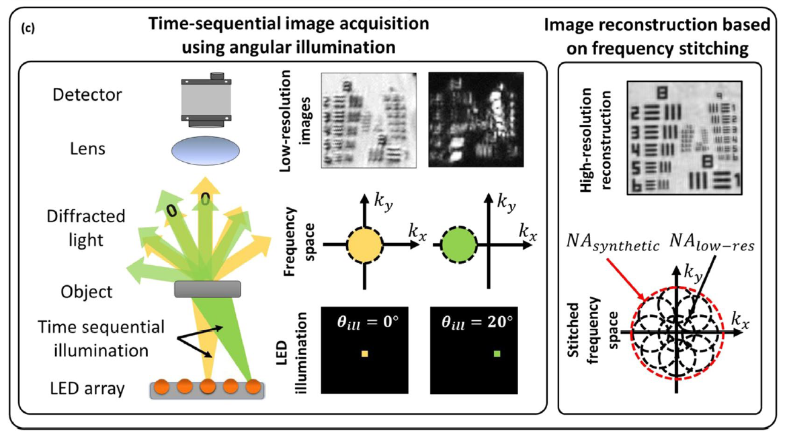
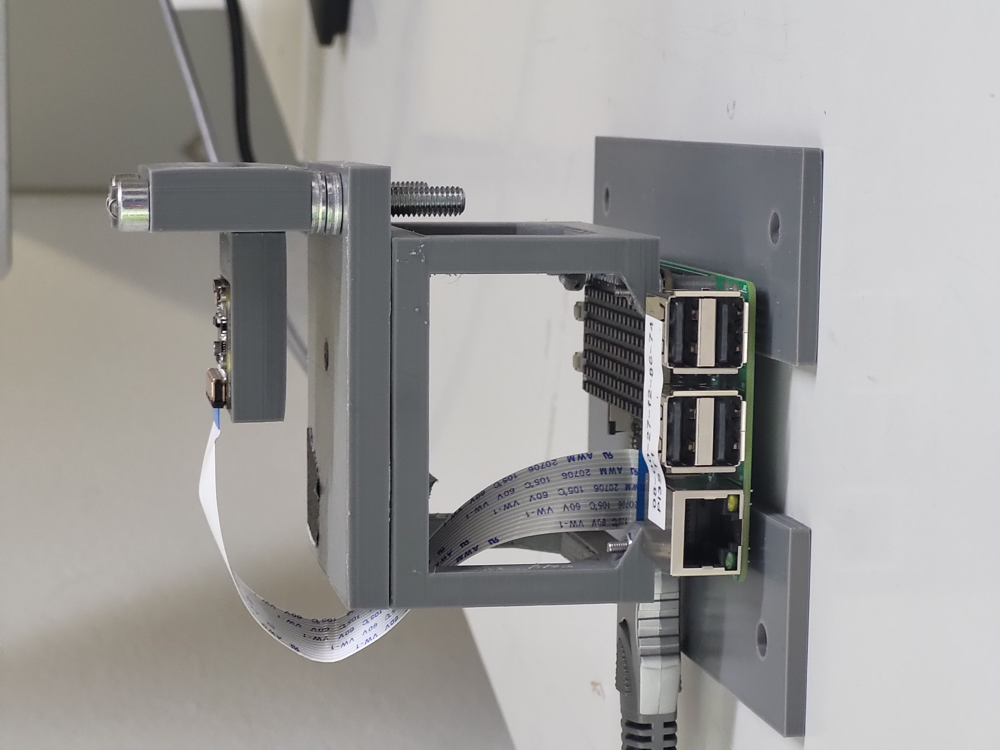
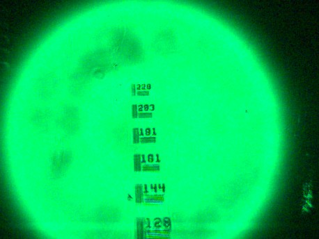
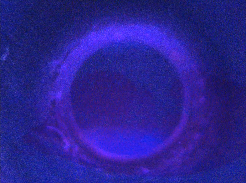
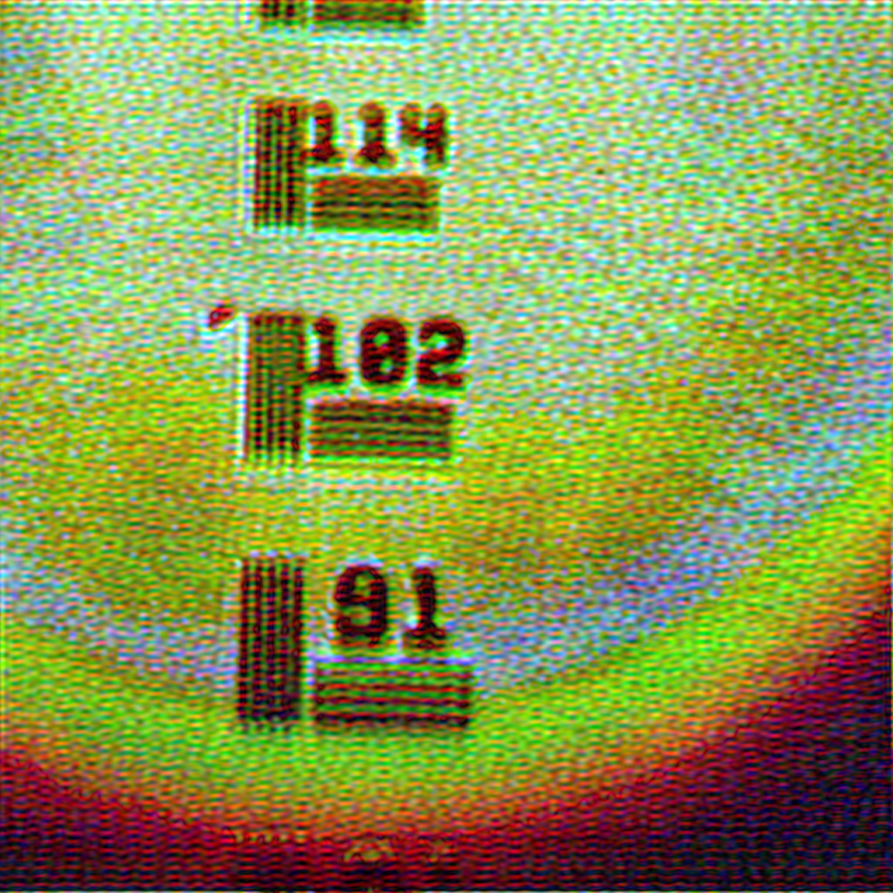
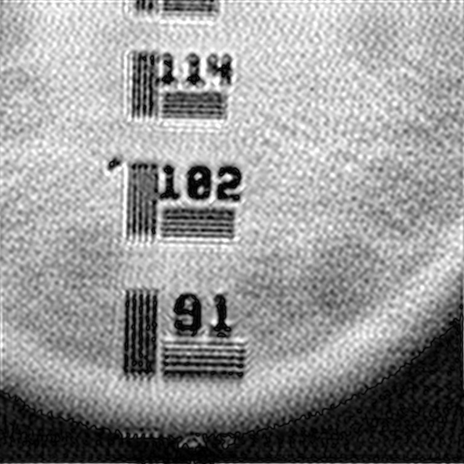
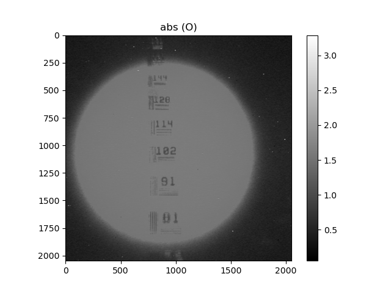
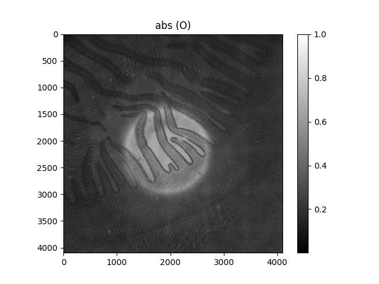
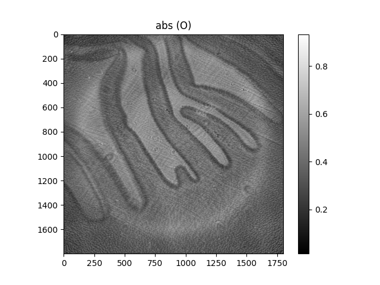

Abstract
This report presents the design, implementation and evaluation of a low-cost Fourier Ptychographic Microscope (FPM) built around a Raspberry Pi 3 Model B, a Raspberry Pi Camera Module V2.1 NoIR (Sony IMX219 sensor) and a Pimoroni Unicorn HAT Mini 17×7 RGB LED array. The instrument sequentially illuminates a sample from up to 119 discrete LED positions and captures one low-resolution image per illumination angle; a GPU-accelerated, PyTorch-based reconstruction pipeline then recovers a higher-resolution complex image using the embedded pupil function recovery (EPRY) alternating-minimization algorithm, with a demosaiced-reconstruction (DR) pre-processing strategy chosen for its stability on the low-cost Bayer sensor. To compensate for the mechanical assembly tolerances of the hand-built LED array and 3D-printed housing, a dark-field LED position self-calibration step is applied prior to reconstruction. Optical alignment was validated on a USAF-1951 resolution target, resolving spatial frequencies up to approximately 180 line pairs/mm (≈ 2.8 µm features), and a full reconstruction run combining 199 raw low-resolution captures produced a 25-megapixel image with a reported sub-micron resolution of approximately 780 nm.
Introduction
Conventional microscopy is fundamentally constrained by a trade-off between field of view (FOV) and spatial resolution: the space-bandwidth product (SBP), the number of resolvable points in an image, is limited by the objective's numerical aperture (NA) and the pixel count of the detector. Increasing SBP through larger, more highly corrected optics or mechanical scanning adds cost, bulk and complexity, which is prohibitive for portable, low-resource settings.
Fourier Ptychographic Microscopy (FPM) addresses this trade-off computationally rather than optically. Instead of a high-NA objective, FPM captures a sequence of low-resolution images of the same FOV under illumination from different angles: typically provided by an LED array beneath the sample. Each oblique illumination angle shifts a corresponding patch of the sample's spatial-frequency spectrum into the pass-band of a low-NA objective; combining many such measurements lets the synthetic aperture (and hence resolution) substantially exceed that of the physical objective, while retaining the wide native FOV.
This project builds on the low-cost, open-hardware FPM demonstrated by Aidukas et al. (Raspberry Pi + 3D-printed opto-mechanics, ~$150 component cost) and the LED self-calibration method of Eckert, Phillips & Waller, adapting both to a different, coarser 17×7 Unicorn HAT Mini illumination array and a GPU-accelerated EPRY reconstruction pipeline built from scratch for this project. The reconstruction was evaluated on a USAF-1951 resolution target and on biological tissue: intestine and mushroom sections.
Theoretical Background & Method
Forward imaging model
For a thin, weakly scattering sample, the image captured under illumination from the m-th LED is modelled as the squared magnitude of an inverse Fourier transform of the product of the sample's spatial-frequency spectrum and the objective pupil function, evaluated with a shift corresponding to the illumination angle:
Im(r) = | F−1 { P(u) · O(u − um) } |²
Sequentially stepping through LED positions whose sub-apertures overlap in the Fourier domain (~60–70% overlap between adjacent apertures) provides enough redundant phase information for iterative phase-retrieval algorithms to stitch together a wide-support, high-resolution spectrum. The synthetic NA of the reconstructed image approaches NAsyn ≈ NAobj + NAillum, decoupling resolution from the physical objective's NA.

EPRY alternating-minimization reconstruction
The reconstruction follows the embedded pupil function recovery (EPRY) alternating-minimization scheme. For each LED, an exit-wave estimate is formed from the current object and pupil estimates; a Fourier-domain magnitude-projection step replaces its amplitude with the square-root of the measured intensity while preserving phase, and the residual drives simultaneous gradient-descent updates of the object spectrum and pupil function. Iterating this over all LEDs and multiple epochs jointly recovers the high-resolution complex object and the objective's pupil (including its aberrations) without a separate aberration-characterisation measurement.
LED position self-calibration
Because the Unicorn HAT Mini array is hand-mounted with millimetre-level mechanical tolerance, a dark-field (DF) self-calibration stage is applied before reconstruction, following Eckert et al. LEDs are split into bright-field (BF, illumination NA inside the objective NA) and dark-field (DF, illumination NA outside it). For each DF LED, the in-pupil region of the raw image's spectral amplitude is masked out and the dominant remaining peak near the nominal k-vector is taken as the corrected illumination coordinate. BF LEDs are left at nominal (design-file) positions, since their fringe pattern is confounded by the sample's own texture.
Demosaicing strategy: DR vs. SSR
The IMX219 sensor's Bayer filter means each raw frame is a sparse, single-channel mosaic. Two strategies were evaluated: Demosaiced Reconstruction (DR): bilinear interpolation (OpenCV) reconstructs full RGB channels before FPM recovery, giving fewer unknowns, faster and more stable convergence: and Sparsely-Sampled Reconstruction (SSR): the solver updates only true measured pixels, which is mathematically cleaner in simulation but more sensitive to real-world read noise. DR was selected as the production pipeline for its repeatable stability and speed; SSR is retained as a benchmark.
Hardware & System Design

| Controller | Raspberry Pi 3 Model B |
|---|---|
| Camera | Raspberry Pi Camera Module V2.1 NoIR: Sony IMX219, 8 MP, 1.12 µm pixel pitch, lens reversed for close-focus imaging |
| Illumination | Pimoroni Unicorn HAT Mini: 17×7 (119-LED) RGB array |
| Reconstruction compute | PyTorch (GPU-accelerated where available), NumPy, SciPy, OpenCV |
| Working distance | ≈ 10 mm (object to reversed camera lens) |
| Test / reference samples | USAF-1951 resolution target; small intestine section; mushroom section |
| Objective NA | 0.15 |
|---|---|
| Magnification | 1.5× |
| LED array grid | 17×7 (119 LEDs) |
| LED pitch | 3.3 mm |
| Array–sample distance | 62 mm |
| Working distance | ≈ 10 mm |
| Reconstruction crop size | 256×256 px |
| DF LED self-calibration | On |
Assembly modifications
The mechanical assembly used as a starting point was designed around a different LED footprint and required two changes for the 17×7 Unicorn HAT Mini:
- Camera mounting offset: the camera mount and aperture were shifted ~8 mm off the housing's original geometric centre, since the physical centre LED of the 17×7 array does not coincide with the point the housing was designed around, which is required for symmetric, on-axis illumination coverage.
- Lens inversion / re-mounting: the stock V2.1 lens is designed for infinite-conjugate imaging, causing the camera to persistently focus on the LED array plane rather than the sample. Adjusting mount height alone did not fix this; the lens was physically removed and re-mounted in reversed orientation, achieving stable focus at ≈ 10 mm working distance: the same principle used in other reversed-lens, low-cost microscopy builds.

Software Architecture
The reconstruction codebase is a configuration-driven Python package: each experiment (e.g.
experiment_intestine.json, experiment_mushroom.json) specifies
dataset paths, crop selection, optical setup parameters and reconstruction hyper-parameters, so
new samples can be processed by writing a new JSON file rather than editing code.
- live_script: live-preview acquisition utility streaming a continuous camera feed with the LED array illuminated, used to verify sample-to-camera alignment and focus before any data is recorded
- capture: data-acquisition script: captures the dark frame, then sequentially illuminates each LED, saving one raw (DNG) + one JPEG image per LED position together with the LED coordinate file
- config_models: validates/parses each experiment's JSON configuration
- geometry: derives pupil radius, per-LED illumination NA and k-vectors
- io: loads raw LED image stacks, LED coordinates, dark-frames
- tiling: splits the 2464×3280 camera frame into GPU-tractable crops
- calibration: dark-field LED position self-calibration
- reconstruction: EPRY alternating-minimization (PyTorch, GPU-capable)
- logger: structured per-run parameters, convergence metrics, artefact paths
- pipeline / run_fpm: orchestrates dark-frame subtraction, calibration, tiling and reconstruction from the CLI
Full acquisition-to-reconstruction pipeline
- Pre-processing: dark-frame subtraction, exposure normalisation, Bayer demosaicing (bilinear/OpenCV), segmentation into overlapping 128×128-px tiles (28 px overlap).
- Iterative phase retrieval: per-tile spectrum refinement via Fourier-domain amplitude replacement and a second-order quasi-Newton update with adaptive step size; centre-outward tile ordering reduces edge distortion.
- Digital calibration: EPRY pupil-aberration recovery; DF LED self-calibration; chromatic-defocus correction via 30 Zernike coefficients per channel; SIFT alignment of the independently reconstructed R/G/B channels.
- Post-processing: histogram equalisation across tiles and seamless Fiji/ImageJ blending into the final field-of-view image.
Applied to a full acquisition of 199 raw captures, this pipeline produced a single 25-megapixel, full-colour reconstruction at ≈ 780 nm resolution, recovering both amplitude and optical phase: the latter enabling imaging of unstained, transparent samples.
Standard Operating Procedure (summary)
- Flash Raspberry Pi OS, enable the camera interface.
- Connect Camera Module V2.1 NoIR via CSI; reverse-mount its lens for close-focus imaging.
- Mount the Unicorn HAT Mini on GPIO, camera aperture offset ≈ 8 mm to centre on the array's centre LED.
- Install dependencies (PyTorch, OpenCV, NumPy, SciPy, Matplotlib, Pillow).
- Run
live_scriptfor a continuous camera preview to verify sample-to-camera alignment and focus before recording. - Optional: once alignment is confirmed, cover the setup with a box/enclosure to shield it from ambient light.
- Run the capture script: (a) capture a dark frame with all LEDs off as the fixed-pattern-noise reference; (b) sequentially illuminate all 119 LEDs, capturing DNG+JPEG pairs.
- Write an experiment configuration JSON (dataset paths, crop selection, optics, hyper-parameters).
- Run the pipeline: dark-frame subtraction → demosaicing/normalisation → optional DF self-calibration → tiling → EPRY reconstruction → tile blending → save outputs + run log.
- Inspect amplitude/phase outputs; adjust calibration or hyper-parameters and repeat if required.
Experimental Results
| Sample | Config. | Crop size | Max. iter. | LED self-cal. |
|---|---|---|---|---|
| USAF-1951 target (144 lp/mm) | Intestine/USAF (0.15 NA, 1.5×) | 256×256 | 20 | On |
| Small intestine section | Intestine/USAF (0.15 NA, 1.5×) | 256×256 | 20 | On |
| Mushroom section | Intestine/USAF (0.15 NA, 1.5×) | 256×256 | 20 | On |
Raw data acquisition
Each of up to 119 LEDs is fired in sequence while the camera captures one raw frame per angle, in both DNG (Bayer raw) and JPEG format. Individual low-resolution frames are strongly defocused / low-contrast: the FPM algorithm recovers detail by combining hundreds of these frequency patches, not from any single capture.


Development process: from underexposed to usable data
Early acquisitions, on both the USAF-1951 target (blue-LED illumination) and an initial intestine sample, reconstructed poorly, with low contrast, missing fine detail and visible artefacts. The root cause was severe underexposure, particularly for high-angle (dark-field) LEDs, which starved the pipeline of high-frequency information. Exposure time for dark-field LEDs was increased roughly 20–30×, with multiple frames averaged per LED to raise signal-to-noise. This confirmed the bottleneck was acquisition, not the reconstruction algorithm, and set up all subsequent, successful runs below.
USAF-1951 resolution validation
The system was validated against the full USAF-1951 target: optical alignment and focus were confirmed by resolving spatial frequencies up to approximately 180–181 line pairs/mm (≈ 2.8 µm features), exceeding the nominal 144 lp/mm design element used for the quantitative run.
The target was imaged under red, green and blue LED illumination separately; each colour channel was reconstructed independently and then combined into a single image.



abs(O),
USAF-1951 target with resolved elements from 144 lp/mm down through 01, confirming
≈180 lp/mm resolution across the reconstructed FOV.Biological sample: mushroom section
After optimizing acquisition (increased exposure time, appropriate camera gain, improved bright-field and dark-field data capture), the final reconstruction of the mushroom sample successfully recovered the sample's structural features with enhanced contrast and finer spatial detail than any earlier attempt, validating the complete acquisition and reconstruction pipeline developed in this project.


abs(O): mushroom
section showing resolved gill structure.Discussion
The results confirm that low-cost, consumer-grade hardware combined with a GPU-accelerated EPRY reconstruction pipeline can achieve meaningful resolution enhancement beyond the native objective NA. The USAF-1951 validation (≈ 180–181 lp/mm) confirms correct optical alignment and reversed-lens focusing ahead of full reconstruction. Several practical factors bound performance in this implementation:
- The 17×7 Unicorn HAT Mini array is considerably coarser than the 15×15–32×32 grids typical in comparable FPM literature systems, reducing Fourier sub-aperture overlap density and limiting achievable synthetic NA / phase-retrieval robustness at high spatial frequencies.
- The array is hand-assembled on a GPIO header without a precision mount, so LED pitch and array-to-sample distance carry millimetre-level uncertainty; DF self-calibration mitigates but does not fully eliminate this, and currently only corrects dark-field LEDs.
- Choosing DR over SSR trades theoretical reconstruction purity for stability and speed on noisy, low-cost sensor data.
- A Bayer colour sensor (vs. dedicated monochrome) discards raw pixel information through demosaicing.
- The Raspberry Pi 3 is used only for acquisition control; reconstruction is offloaded to a separate GPU-equipped machine since the Pi 3's own compute/memory is insufficient for the iterative alternating-minimization algorithm at practical crop sizes.
Future work
- Extend LED self-calibration to bright-field LEDs (e.g. joint optimisation with object/pupil update).
- Complete a systematic, quantitative DR-vs-SSR comparison across all sample runs.
- Upgrade to a denser LED array (e.g. 15×15+) to increase angular sampling density and synthetic NA.
- Port the reconstruction pipeline to run efficiently on-device or via lightweight edge-compute.
- Extend automated multi-tile stitching to mosaic full-frame, wide-FOV reconstructions.
- Apply the full pipeline to unstained, transparent biological samples to exploit recovered phase.
- Evaluate illumination multiplexing to reduce the number of captured images per reconstruction.
- Expand testing across a wider range of biological samples and repeat across multiple instrument assemblies.
References
- G. Zheng, R. Horstmeyer, and C. Yang, "Wide-field, high-resolution Fourier ptychographic microscopy," Nature Photonics, vol. 7, pp. 739–745, 2013.
- X. Ou, G. Zheng, and C. Yang, "Embedded pupil function recovery for Fourier ptychographic microscopy," Optics Express, vol. 22, pp. 4960–4972, 2014.
- R. Eckert, Z. F. Phillips, and L. Waller, "Efficient illumination angle self-calibration in Fourier ptychography," Applied Optics, vol. 57, p. 5434, 2018.
- T. Aidukas, R. Eckert, A. R. Harvey, L. Waller, and P. C. Konda, "Low-cost, sub-micron resolution, wide-field computational microscopy using open-source hardware," Scientific Reports, vol. 9, p. 7457, 2019.
- N. A. Switz, M. V. D'Ambrosio, and D. A. Fletcher, "Low-cost mobile phone microscopy with a reversed mobile phone camera lens," PLoS ONE, vol. 9, 2014.
- P. C. Konda, T. Aidukas, and A. R. Harvey, "Miniature Fourier ptychography microscope using Raspberry Pi camera and hardware," in Imaging and Applied Optics 2017, OSA Technical Digest, paper JTu5A.17, 2017.
- F. Guzmán and E. Vera, "Low-Cost Fourier Ptychography Microscope Kit," in 2019 XXII Symposium on Image, Signal Processing and Artificial Vision (STSIVA), 2019, doi: 10.1109/STSIVA.2019.8730237.
Reconstruction code repository: github.com/johnmeshreki/FPM.